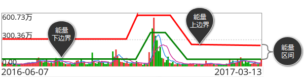
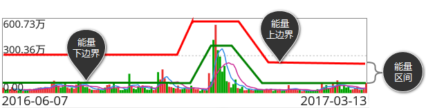
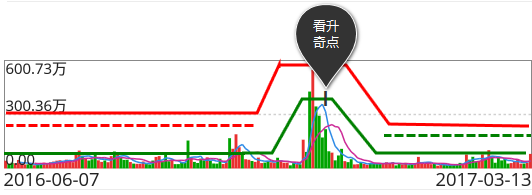

能量区间是对市场存量资金参与股票买卖所测定出的买卖合力的数值范围，该范围的上边界是买卖合力的上升极限，下边界是买卖合力的下降极限。 在图中两平行实线中上面一条为上边界，下面一条为下边界，实线中间区域为能量区间。

当市场成交额靠近能量上边界时，股价将出现震荡或回调，结合趋势分析，风险分析和波段分析，可以判定调整的性质或大小。
当市场成交额达到能量下边界时，股价将震荡或反弹，结合趋势分析，风险分析和波段分析，可以判定反弹的性质或大小。
能量区间是对市场存量资金参与股票买卖所测定出的买卖合力的数值范围，该范围的上边界是买卖合力的上升极限，下边界是买卖合力的下降极限。 在图中两平行实线中上面一条为上边界，下面一条为下边界，实线中间区域为能量区间。

当市场成交额靠近能量上边界时，股价将出现震荡或回调，结合趋势分析，风险分析和波段分析，可以判定调整的性质或大小。
当市场成交额达到能量下边界时，股价将震荡或反弹，结合趋势分析，风险分析和波段分析，可以判定反弹的性质或大小。
在能量趋势下降中，场内资金的活跃度提高，进入底部震荡阶段，能量系统提示“出现I点”，这一点就是看升奇点I，图中显示出I。

出现I点，持股安全系数增加，震荡寻底；结合看底奇点L分析，可判定底部构造，强多进场。
I点出现在能量趋势下降时，由于在价格震荡寻底时提示买入，所以是“左侧交易”指标。I点必须与看底奇点L，价值趋势由下降至调整或价值趋势上升搭配使用，提示低位建仓。
在价值趋势上升中，市场交易的活跃度下降，进入了顶部震荡阶段，能量系统提示“出现D点”，这一点就是看跌奇点D，图中显示出D。
出现D点，持股安全系数降低，震荡做顶；结合看顶奇点T分析，可判定顶部构造，抛空离场。
D点出现在能量趋势上升时，由于在价格震荡做顶时提示卖出，所以是“左侧交易”指标。D点必须与看顶奇点T、看卖奇点S前后搭配使用，提示高位减仓。